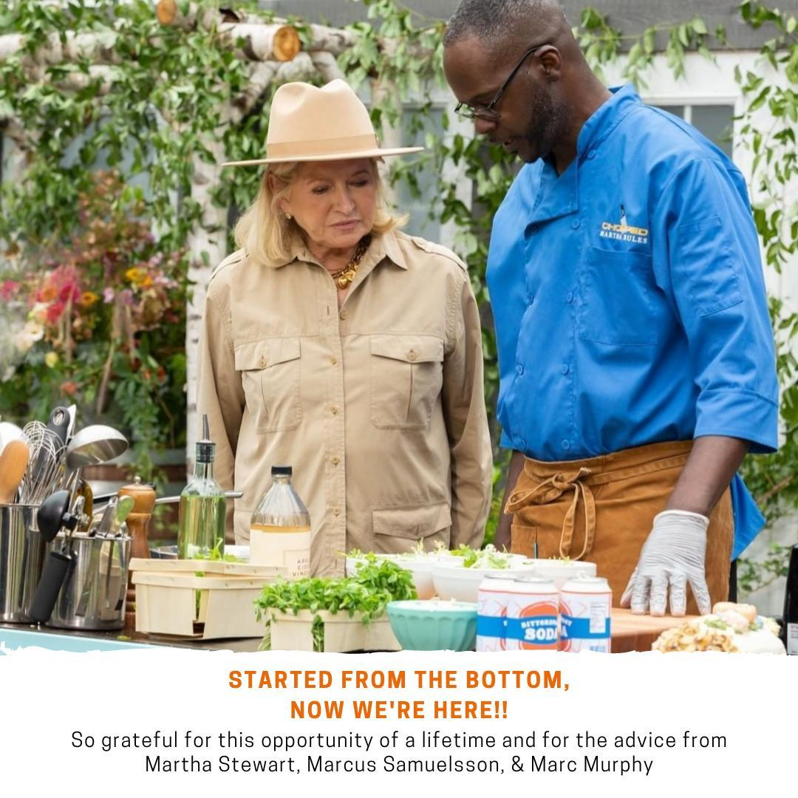
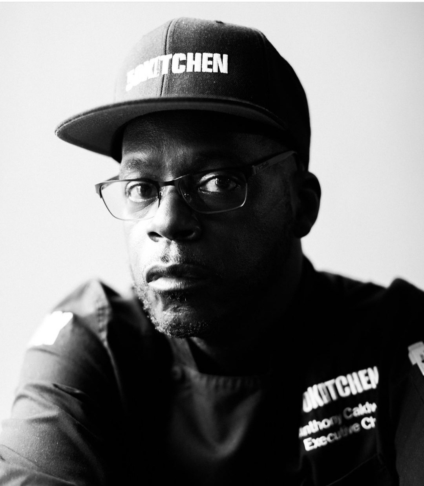

Smoked Banh Mi
$17Vietnamese crunch with smoked brisket, daikon, cilantro, jalapeno, cucumber, and a Southern twist.

Chef Anthony Caldwell brought 50Kitchen's Southern-meets-Asian point of view to Food Network's Chopped in the Martha Rules episode — now he brings that same bold, creative food to the Triangle.
Chef Anthony Caldwell built 50Kitchen from a promise: by 50, he would have his own kitchen. That dream started in Dorchester, earned national press, survived a pandemic chapter, and now rolls through North Carolina with a tighter, bolder food truck experience.
The food is Southern comfort with Asian technique and attitude: smoked banh mi, crispy ribs, jambalaya egg rolls, bang bang cauliflower, and the honey fried cornbread that regulars tell first-timers not to skip.

Designed for lunch lines, breweries, festivals, office parks, private events, and guests who want something with a real point of view.
Make the next stop easy for customers and make the next booking easy for event planners.
Follow the live schedule across Raleigh, Durham, Cary, Chapel Hill, Pittsboro, Apex, Garner, Burlington, and surrounding Triangle events.
View ScheduleUse the Toast link for current online ordering when the truck is open and accepting orders.
Order on ToastSliders, wings, crispy ribs, egg rolls, cornbread, bowls, and custom event packages for groups.
See CateringTell us the date, city, guest count, and style of service. Chef Anthony and the 50Kitchen team can help shape the right menu.